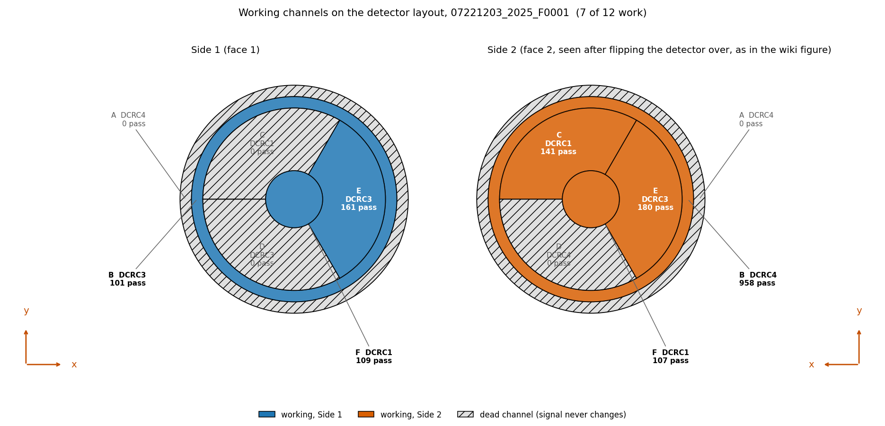
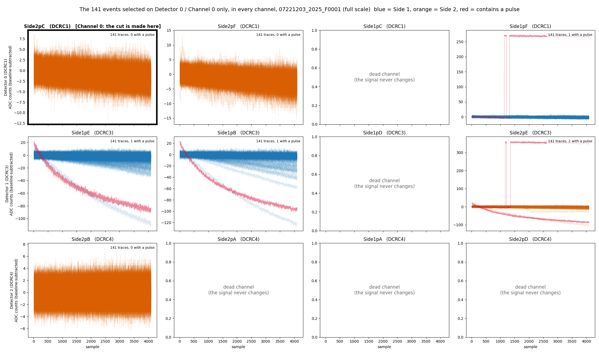
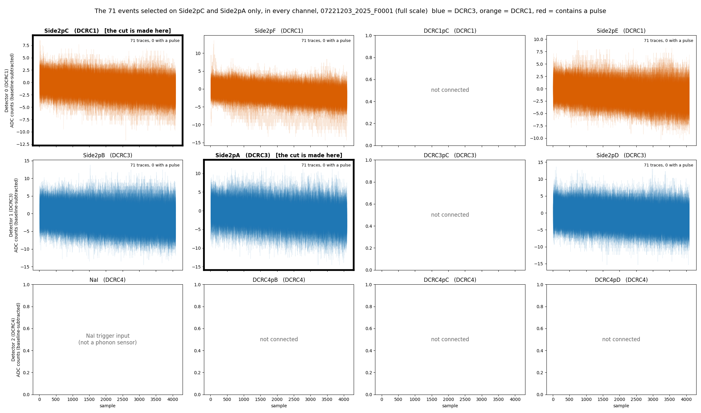
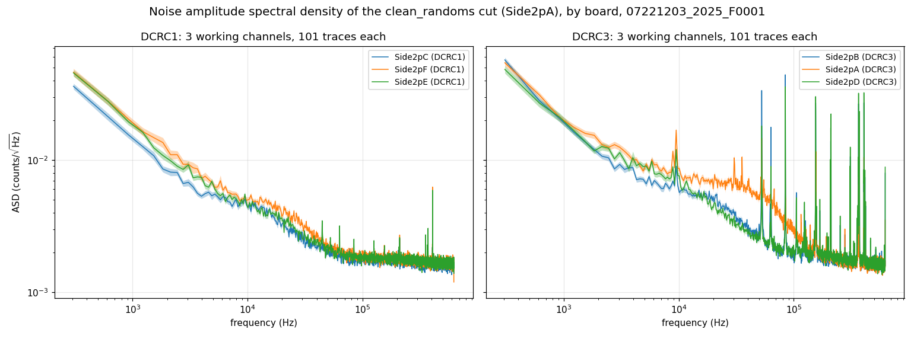
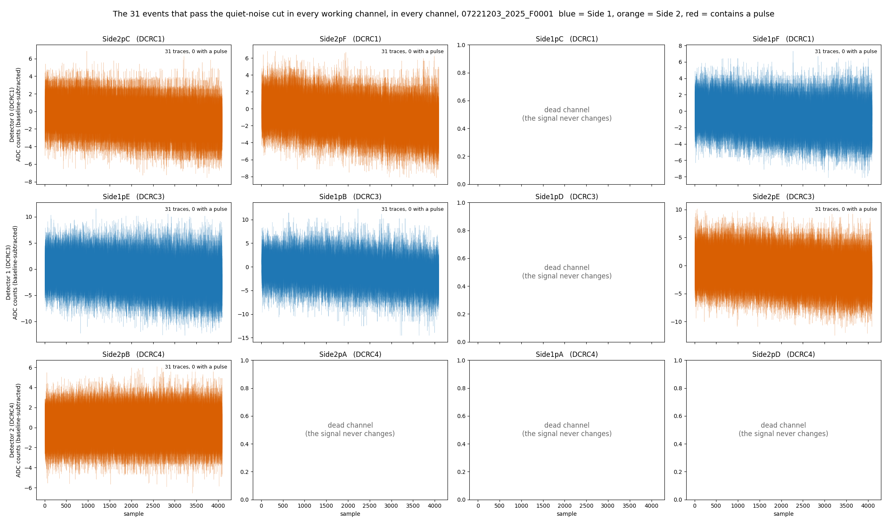
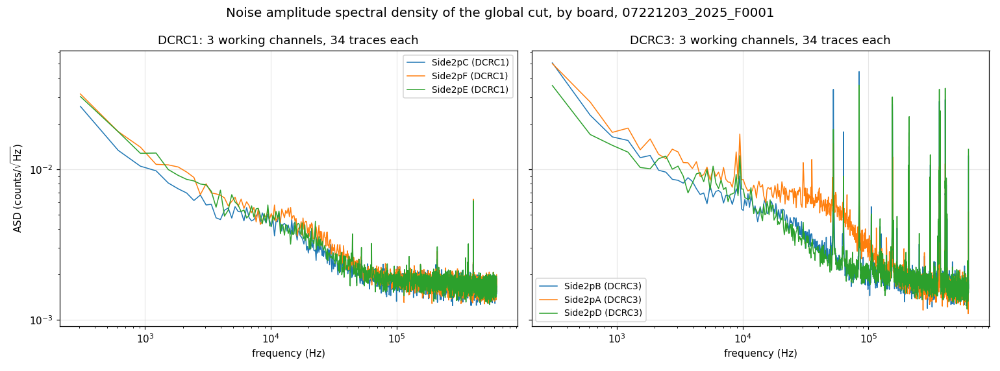
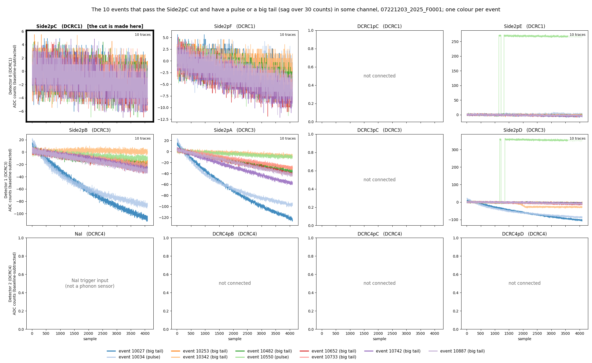
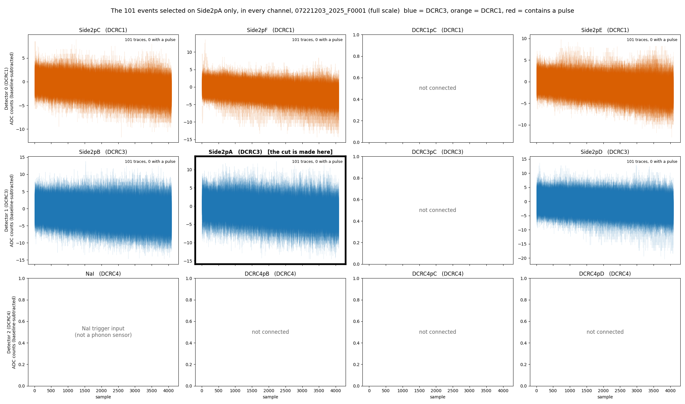
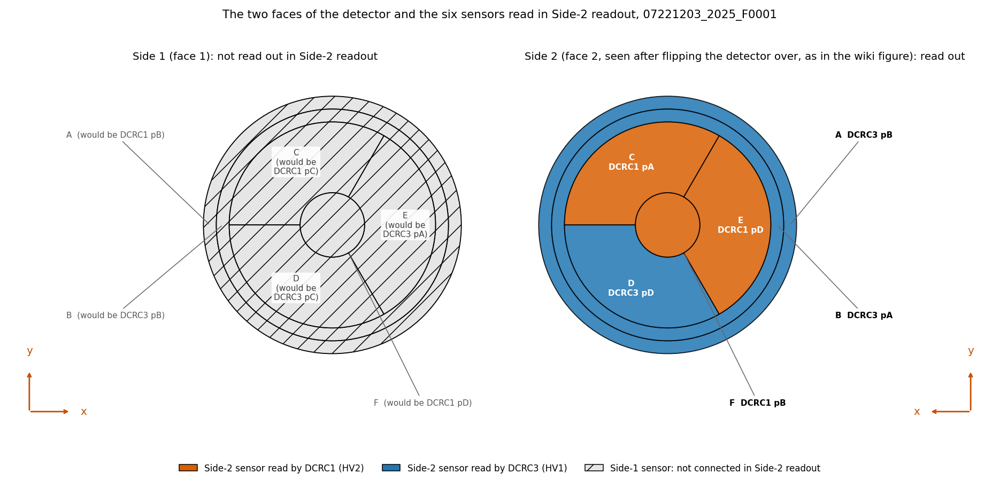

WARNING (22 October 2026): the sample time has
changed. The phonon sample period is 0.8 µs (1.25 MHz),
not 1.6 µs (625 kHz); a 4096-sample trace is 3.2768 ms. This
note, its figures and its HDF5 file were made with 1.6 µs until
2026-10-22, which was wrong (see The sample period in
python/README.md). What changed in this note:
sample_period_s (the library default is used), and the HDF5
file psd-clean-randoms-07221203_2025_F0001.h5 has
sample_period_s = 8e-07 and the frequencies of the new
axis, so any analysis that used its frequencies must be redone.
18c4bab for the notebooks, figures and file,
ade25df for the library). WARNING (22 October 2026): the channel map has
changed. The table columns used for the channel names were the
wrong ones for this series. It is read out on Side 2,
so one uses the Label and HV output, Side 2 readout
columns of the Run 76 Setup table: there are six sensors, all on
Side 2, on DCRC1 and DCRC3; DCRC4 pA is the input of
the NaI trigger signal and the other five inputs are not
connected (python/pulse_channels.py, since 2026-10-22).
What changed in this note:
Side1pF and is Side2pE (PES2); (1, 0) was
Side1pE and is Side2pB (PBS2); (1, 1) was
Side1pB and is Side2pA (PAS2); (1, 3) was
Side2pE and is Side2pD (PDS2); (2, 0) was
Side2pB (PBS2) and is the NaI trigger input.
Side2pC (PCS2, 0 / 0) and Side2pF (PFS2, 0 /
1) are as before. Everything keyed by (detector, channel), the cuts, the
event numbers and counts, is unchanged. Side2pA to Side2pF (the old
Side1pB group is Side2pA), with
side = 2 and the new attributes board_input
and hv_output; the NaI input has no group.
Side2pC, B is Side2pF); the explanatory
text next to the table writes it the other way round, which we take to
be a typo (the Trello page of the notebook carries a marked copy). The
board order and the Side-2 readout of the December series are inferred
(Data and setup). All code is pinned to two commits: buddy’s notebooks, the saved HDF5
file and the figures to 18c4bab, the commit of the re-run
with the corrected sample period (0.8 µs) and the channel map of the
Side-2 readout, and the library in python/ to
ade25df. Each link shows the file as it was when the
results below were made, which may be older than the latest version, and
the file may have moved since (see
data_analysis/README.md). On the published page a small
“latest” link after each one opens the file on develop
today.
psd-clean-randoms-buddy.ipynb:
the spectra of every channel from the clean_randoms cut,
and the saved HDF5 file psd-clean-randoms-07221203_2025_F0001.h5
(Noise Power Spectral Densities).chan0-cut-on-all-channels-buddy.ipynb:
how good the PCS2 cut (the channel names are explained under Data and
setup) is on the other channels, and the definition of the cut we use
(clean_randoms) (Selection of Randoms in All Channels, Data
and setup for the timing of the randoms, Appendices A and B).detector-faces-buddy.ipynb:
the drawing of both faces of the detector (Appendix C).noise-psd-randoms-buddy.ipynb:
the channel map and the noise spectra of the 34 events of the strictest
cut (Data and setup, Appendix A).extract_odb_facts.py
and odb-facts-07220916_2200.json:
the run configuration of series 07220916_2200 (board order,
QET biases, random rates) read from its raw file, which is not in the
repository, and the numbers it gave; section 12 of
noise-psd-randoms-buddy.ipynb prints them (Data and setup,
Caveats).pulse_channels.py,
pulse_cuts.py
and pulse_quantities.py:
the library for the channel names, the randoms and excursion-band cuts,
and the PSD.We are using the file 07221203_2025_F0001, which is series
07221203_2025, Dump 1. The first 1000 events are “random” triggers (the
“Beginning of Run Randoms,” BORR, taken at about 20 Hz: 1000 events in
49 seconds); random triggers are snapshots of our detector traces taken
at any time (rather than when a pulse occurs) to sample the noise
environment. The line in the third code block of the noise-psd-randoms-buddy.ipynb
notebook shows the randoms cut defined as
quiet_noise = pc.excursion_band(pulses, config_500) & (np.log10(bstd_500) < 0.5)
in addition to selecting the trigger specification for random events.
The other 8 of the 1008 events that carry the randoms label are “in-run”
randoms: they are spread through the rest of the dump, one every 1 to 2
seconds (all 8 in the last 9 seconds of the dump; the timestamps have
one-second resolution). The run configuration of series
07220916_2200 lists 5 Hz for in-run randoms, which does not
match what we see here, so that rate should not be assumed for this
series.
Note. The trigger-type labels in the dump’s
.csv are the wrong way round. The column
trigger_type has two values, Physics and
Unknown. By their names one would read Physics
as an event triggered by a pulse and Unknown as a trigger
of undetermined type. In this dump it is the opposite: the first 1000
events, which are the Beginning of Run Randoms (the run configuration
asks for 1000 randoms at 20 Hz, and these 1000 events span 49 s, which
is 20.4 Hz), are all labelled Physics, and the other
events, 509 in this dump, are labelled Unknown. So we take
Physics to mean a random trigger and Unknown
to mean a real (pulse) trigger, which is what pc.randoms
and pc.real_triggers do. This is a working assumption:
nothing in the data files or the DAQ documentation we have confirms it,
and the two functions are tagged under development for that reason (see
Note
2a).
It may also be useful to have a diagram of the detector and which channels are working during the R76 run period at UMN. The figure below was reconstructed from the archive of the UMN Wiki.
How we found which channel is which. The data are numbered by detector (0 to 2) and channel (0 to 3), but there is one detector, S104, read out by three four-channel electronics boards (DCRC1, DCRC3, DCRC4). We matched them to the detector’s channels in four steps:
Side1pA to Side2pF) and, for a Side-1 readout
and for a Side-2 readout, the HV connector pin each is wired to. Matt
Fritts’s explanation of the table (page 28 of the notebook
N-MISC-23-001) says to use the Label and HV output,
Side2-readout columns: HV1 and HV2 are the two D-subs the DCRCs
plug into, and the header of a run-diary page from late in the run, when
the detector was left in Side-2 readout, says that HV1 has DCRC3, HV2
has DCRC1 and the NaI trigger signal goes to DCRC4. The December 2022
series is after that change, so it is a Side-2 readout. (An earlier
version of this note used the table’s DCRC (2-sided) column and
found twelve channels on two sides, which was wrong for this
readout.)Side2pC, Side2pF, Side2pE (DCRC1)
and HV1 pA, pB, pD are Side2pB, Side2pA,
Side2pD (DCRC3); pC is not used. Matt’s text next to the
table writes the DCRC1 order as pF, pC, pE; the table and the 2022
diaries (“DCRC1pA = Side2pC”) agree with each other, so we take the text
to be a typo. This is not confirmed with Matt.07220916_2200; the raw file for series
07221203_2025, the one analysed here, is not on NSDF) holds
the run configuration. It enables boards DCRC1, DCRC3 and DCRC4, and the
three records of each event carry the codes 9, 11 and 12, which are the
board numbers plus 8. So detector 0, 1, 2 = DCRC1, DCRC3, DCRC4. This is
inferred and not confirmed.The mapping is kept in python/pulse_channels.py,
marked as under development, and section 7 of that notebook, noise-psd-randoms-buddy.ipynb,
gives the evidence.
Channel names. In the text a channel is written as
P, the letter of its sensor, and its side: PCS2 is the phonon channel C
on Side 2. The library, the tile titles of the figures and the HDF5 file
of the PSDs use the form Side2pC for the same channel, and
the dump numbers it as detector 0, channel 0. The six sensors, all on
Side 2:
| In the text | Library and figures | Dump (detector / channel) | Board and input | Randoms that pass its own quiet-noise cut |
|---|---|---|---|---|
| PCS2 | Side2pC |
0 / 0 | DCRC1 pA | 141 |
| PFS2 | Side2pF |
0 / 1 | DCRC1 pB | 107 |
| PES2 | Side2pE |
0 / 3 | DCRC1 pD | 109 |
| PBS2 | Side2pB |
1 / 0 | DCRC3 pA | 161 |
| PAS2 | Side2pA |
1 / 1 | DCRC3 pB | 101 |
| PDS2 | Side2pD |
1 / 3 | DCRC3 pD | 180 |
The other six inputs are not sensors: DCRC4 pA (dump 2 / 0) is the input of the trigger signal of the NaI array, and DCRC1 pC, DCRC3 pC, DCRC4 pB, pC and pD are not connected (their signal never changes).

Figure 1: The six sensors of detector S104 on Side 2, the face that is read out in this series (as seen after flipping the detector over). Each region is coloured by its readout board, DCRC1 (orange) or DCRC3 (blue), and labelled with its letter, its board and input (the number of randoms that pass each sensor’s own quiet-noise cut is in the table above). The other six inputs are not on the detector. Appendix C draws the whole detector, with the face that is not read out.
Based on this series’ Beginning of Run Randoms (BORR), what is our best estimate for the noise environment of the experimental setup? The noise environment is typically summarized in terms of the Power Spectral Density (PSD).
Typically, BORR are taken in the first events of the first “dump” (file) of a series’ raw data. In this series that is the case and there are 1000 BORR. Often some of the initial traces are “contaminated” with a real physics pulse that just happened to be in the random’s readout window. We call this a “pileup” pulse. Those occurances can mess up the noise computation and therefore the extracted pulse amplitudes; pulse amplitudes are used to estimate the energy deposited in each event. Here I describe how we make a cut on the data to be sure those pileups are removed.
This sort of thing has been done on one channel, PCS2, and it is the
topic of Note
2 and Note
2a. Note 2 develops the noise-pulse selection: an excursion cut on a
500-sample pretrigger window (the Tight band) together with a cut on the
baseline scatter, log10(bstd) < 0.5, which keeps 179 of
the 1517 traces. Note 2a adds the trigger cut that keeps only the
randoms, 141 of those 179 (the other 38 are real triggers), and looks at
how the baseline scatter changes with time.
To use that cut I have to decide how to apply it to all of the channels. A pileup should show up in all channels simultaneously, because the origin is a real physics event. It is possible the amplitude in some channels could be small enough so that it’s not obvious. Figure 2 is a plot based on the cut for PCS2 only (see the Data and setup section). To my slight surprise I found that this cut does not remove some traces that are either glitches or tails of pulses in the DCRC3 channels. I don’t want those pulses in the noise sample.

Figure 2: The 141 randoms that pass the PCS2 cut, in every channel. One tile per channel (rows are the boards DCRC1, DCRC3 and DCRC4); the traces are drawn over each other with transparency, baseline-subtracted, on a free vertical scale. The cut is made on PCS2 (framed). Blue is DCRC3, orange is DCRC1, and red marks a trace that contains a pulse. The 6 tiles with grey text are the inputs that are not sensors. Several traces carry large baseline ramps in the DCRC3 channels even though they are quiet in PCS2.
Based on what was seen in Figure 2. I developed a cut that will select noise for PAS2. It will hopefully not be as strict as requiring the analogous cut to be true on all channels. That leaves only 34 traces (see Appendix A).
Instead of doing all channels I selected instead one channel on each board to apply the standard cut to and then took the logical “AND.” In that case the remaining number of traces was somewhat small (71) but the quality looked pristine.

Figure 3: The randoms that pass the cut on one channel of each board, in every channel. The cut is the quiet-noise cut on PCS2 (DCRC1) and on PAS2 (DCRC3), both framed. One tile per channel, with the traces drawn over each other with transparency on a free vertical scale. Blue is DCRC3, orange is DCRC1, and red would mark a trace that contains a pulse. The 6 tiles with grey text are the inputs that are not sensors.
While setting this up in the Jupyter notebook chan0-cut-on-all-channels-buddy.ipynb,
I checked if there were similar traces left in the DCRC1 channels after
selecting on PAS2 (DCRC3), just like we saw in the DCRC3 channels after
selecting on PCS2 (DCRC1). Appendix B
shows the traces left in the DCRC3 channels after the PCS2 cut (Figure
7), and then the PAS2 cut itself (Figure 8). To my surprise there
were not traces in the DCRC1 channels that were very apparent.
That means that for some reason cutting on PAS2 is more pure than
cutting on PCS2. Since cutting on PAS2 alone is also less restrictive
than the combined cut by definition, this led to more accepted randoms
(101, compared with 71 for one channel on each board and 34 for all
channels).
We will use this cut going forward: the cut of Notes
2 and 2a (a random trigger in the Tight excursion band with
log10(bstd) < 0.5) made on PAS2 (DCRC3). In the notebook
it is defined in one place, clean_randoms_cut, and the
selection it makes is called clean_randoms.
The key parameter we want to get out of pulses in these detectors is the overall “amplitude” because it should be proportional to the energy deposited in a scattering event. That’s hard to do for the small signals (near the noise baseline) that we have for dark matter direct detection (the expected recoil spectrum rises roughly exponentially toward low energy, with no turnover; Lewin and Smith [1]) so we use an algorithm called the Optimal Filter (OF) (Gatti and Manfredi [2]; Golwala [3]; Press et al. [4]; Szymkowiak et al. [5]) instead of a simpler procedure like integrating the pulses. The crucial part of the OF is that it takes into account the electronic noise environment of the sensor, rather than blindly integrating. The noise is summarized by the Power Spectral Density (PSD) constructed with traces that have no pulses present–the ones we are selecting here.
The PSD is sort of like the standard deviation of different frequency components in a trace (any trace can be written as a sum of sinusoids of different frequencies, the Fourier decomposition [4]). The PSD can be calculated for discrete data sampling as below, by averaging the squared Fourier amplitudes of many traces (Welch [6]):
Take a trace of
samples
,
,
taken every
(here
),
with its baseline subtracted. Its discrete Fourier transform is
,
with
(
is even here), which are the non-negative frequencies, all that the
one-sided PSD needs. Bin
sits at the frequency
,
from zero
()
up to the Nyquist frequency
().
Averaging over
traces with no pulse in them (here the
traces of the clean_randoms cut, or the 34 of Appendix A),
the one-sided PSD is
where
is trace
and
its transform. The amplitude spectral density is
,
in
counts/.
The factor 2 folds the negative frequencies onto the positive ones (it
is left out for the zero-frequency and Nyquist bins), and the
and
make
independent of the trace length and the sampling rate, so that its
integral over frequency equals the mean square of the trace (its
variance, if the trace has zero mean). Here
= 4086, the length of a trace after the leading glitch samples are
dropped, so there are 2044 bins, from 306 Hz (the first non-zero bin) to
625 kHz; the zero-frequency bin is not plotted. This is the convention
used in the notebook (noise-psd-randoms-buddy.ipynb);
Note 3 plotted the raw
instead, which differs from
only by the constant
.
Conventions. We use one-sided spectra: the PSD above, in counts²/Hz, and the amplitude spectral density (ASD) , in counts/, which is the quantity the figures show and the usual way to quote noise. Golwala [3] (appendix B, pp. 409 to 418) uses a different convention in three ways. His Fourier transform has the factor on the forward transform (p. 412), so his is our . His PSD is two-sided, with equal to the variance (p. 415). He estimates it as , averaged over noise traces, with (p. 417); the averaging over traces is the same as ours. In our terms for , so his amplitude is our ASD divided by . He also notes that the quantity usually quoted, , is often wrongly called the PSD (p. 415). The difference matters when the spectrum goes into the optimal filter, whose expected resolution is for a pulse template (his equation B.1, p. 418). Written with our one-sided it is , and using in his formula unchanged would be off by a factor of 2. The template must use his scaling of the Fourier transform too.
Figure 4 shows the amplitude spectral density of the 101 events of
the clean_randoms cut, the cut used from now on. Above 100
kHz it is flat, between 1.70e-3 and 1.74e-3 counts/√Hz in the three
DCRC1 channels PCS2, PFS2 and PES2; the narrow lines of the DCRC3
channels raise their means to 1.98e-3 (PAS2), 2.64e-3 (PBS2) and 2.93e-3
(PDS2) counts/√Hz. Between 1 and 10 kHz the amplitude is 6.29e-3 to
1.10e-2 counts/√Hz in the six channels.

Figure 4: The noise amplitude spectral density of the 101
randoms of the clean_randoms cut, by board. DCRC1
on the left (3 sensors) and DCRC3 on the right (3 sensors), one colour
per channel within each panel (the colours are not shared between the
panels). Each curve is the one-sided amplitude spectral density
(counts/√Hz), the square root of the mean PSD over the 101 events as
defined above, and the thin band around it is the uncertainty on the
mean (one standard error carried to the square root, 0.049 to 0.050 of
the value in every channel). Both panels share the same axes. The inputs
that are not sensors are not shown.
07220916_2200) lists zero QET bias on all four
DCRC4 channels and the feedback of channel 0 disabled, which fits an
input that is not a sensor. The UMN
wiki mentions the NaI trigger signal in DCRC4 pA in its diaries; the
page of the run summary shows an example of it. Side2pC and HV2 pB on
Side2pF; Matt Fritts’s text next to the table writes A, B,
D as pF, pC, pE. We take the text to be a typo, because the table and
the 2022 diaries agree. If the text were right, the names PCS2 and PFS2
would swap. Not yet confirmed with Matt.clean_randomsThe selection of randoms that we use from now on is called
clean_randoms. It is the cut of Notes 2
and 2a, made on PAS2 (DCRC3): a random trigger (pc.randoms)
whose trace falls in the Tight excursion band of the 500-sample
pretrigger window (pc.excursion_band) and has
log10(bstd) < 0.5. In series 07221203_2025,
dump F0001 it keeps 101 of the 1008 randoms, none with
a pulse or a big tail in any channel (Appendix B). It is defined by the
function clean_randoms_cut in chan0-cut-on-all-channels-buddy.ipynb
(section 13), and the code below is that function.
clean_randoms is a True/False value for every event of the
dump; because the three boards share their events in the same order, the
same list selects the clean random traces of every channel.
import sys
from pathlib import Path
import numpy as np
from nsdf_dark_matter.idx import load_all_data
REPO = next(p for p in [Path.cwd().resolve(), *Path.cwd().resolve().parents] if (p / "python" / "pulse_io.py").exists())
sys.path.insert(0, str(REPO / "python"))
import pulse_io as pio
import pulse_quantities as pq
import pulse_cuts as pc
from pulse_config import PulseConfig
config = PulseConfig(pretrigger_samples=500, glitch_samples=10) # the sample period is the library default, 0.8 us
def clean_randoms_cut(pulses, trigger_types, config=config):
"""Randoms with no pulse: a random trigger in the Tight excursion band with log10(bstd) < 0.5."""
with np.errstate(all="ignore"):
quiet = pc.excursion_band(pulses, config) & (np.log10(pq.bstd(pulses, config)) < 0.5)
return pc.randoms(trigger_types) & quiet
cdms = load_all_data(str(Path.home() / "idx" / "07221203_2025_F0001"))
det1 = pio.filter_by_detector(cdms.get_detector_ids(), 1)
_, pulses = pio.load_channel_batch(cdms, det1, 1) # Side2pA: detector 1, channel 1
clean_randoms = clean_randoms_cut(pulses, pio.trigger_types(cdms, det1)) # True for the events of the cut
print(clean_randoms.sum(), "of", len(clean_randoms), "events")
det0 = pio.filter_by_detector(cdms.get_detector_ids(), 0)
_, other = pio.load_channel_batch(cdms, det0, 0) # any other channel: same events, same order
traces = other[clean_randoms] # its clean random traces
print(traces.shape)Run it from inside the NSDF-Data folder, after
downloading the dump to ~/idx. It prints
101 of 1517 events and (101, 4096). The
library prints a warning that pc.randoms is under
development, because it assumes the trigger labels are swapped (Note
2a).
I’ve made the current best estimate of the noise spectrum
specifically focusing on the series 07221203_2025. The
spectra are accessible via psd-clean-randoms-07221203_2025_F0001.h5
file (pinned to 18c4bab, 435 kB), and can be accessed
by:
import h5py
import numpy as np
with h5py.File("data_analysis/R76/student/buddy/psd-clean-randoms-07221203_2025_F0001.h5", "r") as f:
freq = f["frequency_hz"][:] # Hz, shared by all channels
events = f["event_numbers"][:] # the 101 clean_randoms events
asd = {name: (g["asd_mean"][:], g["asd_sem"][:]) # counts/sqrt(Hz), one-sided, and its standard error
for name, g in f["channels"].items()}
mean, sem = asd["Side2pA"]
print(len(events), "events;", len(asd), "channels:", ", ".join(asd))
print(f"Side2pA at {freq[100]:.0f} Hz: {mean[100]:.2e} +/- {sem[100]:.1e} counts/sqrt(Hz)")Run it from the NSDF-Data folder. It prints the number
of events and the 6 sensors (Side2pA, Side2pB,
Side2pC, Side2pD, Side2pE,
Side2pF: PAS2, PBS2, PCS2, PDS2, PES2 and PFS2 in the
notation above); the inputs that are not sensors have no spectrum. Each
channel group has the attributes detector,
channel, side (2), dcrc,
board_input and hv_output. For each channel
the file holds the amplitude spectral density of the 101 events of the
clean_randoms cut (asd_mean, one-sided, in
counts/√Hz) and its standard error (asd_sem), and the PSD
it is the square root of (psd_mean and
psd_sem, in counts²/Hz); the layout of the file is
described in section 7 of psd-clean-randoms-buddy.ipynb,
which also makes them. The caveats above apply.
Next steps. There are two possibilities:
The strictest version of the selection keeps a random only if it
passes the quiet-noise cut (the Tight excursion band and
log10(bstd) < 0.5) in every working
channel. Six of the 12 inputs are sensors and work, and the
other six (the NaI trigger input and five unconnected inputs) are left
out, so the cut is applied to the six. It keeps 34 of the 1008
randoms (31 in the earlier version, which counted the NaI input
as a seventh channel: three randoms failed only there), far fewer than
the 141 that pass on PCS2 alone. Each of the six sensors passes the cut
for only 101 to 180 randoms on its own, and the events that fail are not
the same in all of them. Any two of those channels share 62% to 89% of
the smaller set (well above the 11 to 29 events expected by chance), but
each further channel removes more, so only 34 events pass in all of
them, 34% of the 101 of PAS2, the strictest channel. The Tight excursion
band does most of the rejecting: only 116 to 189 of the 1008 randoms
fall in the band on each of the six channels, while the
log10(bstd) < 0.5 condition keeps 770 to 895.
Figure 5 shows the 34 traces themselves in every channel (section 12
of chan0-cut-on-all-channels-buddy.ipynb):
none of them has a pulse or a ramp, and they all look like noise, but
there are only 34 of them. Figure 6 shows their noise amplitude spectral
density, the mean of the 34 traces in each channel (section 11 of noise-psd-randoms-buddy.ipynb).
With so few traces the spectra are jagged from bin to bin, and no spread
between the traces is drawn. This is why a cut that is not required to
hold on all channels, and so keeps more traces, is worth looking
for.

Figure 5: The 34 randoms that pass the quiet-noise cut in every working channel, in every channel. One tile per channel (rows are the boards DCRC1, DCRC3 and DCRC4), with the traces drawn over each other with transparency, baseline-subtracted, on a free vertical scale. Blue is DCRC3 and orange is DCRC1; no trace contains a pulse. The 6 tiles with grey text are the inputs that are not sensors.

Figure 6: Noise amplitude spectral density of the 34 randoms that pass the quiet-noise cut in every working channel, by board. DCRC1 on the left (3 sensors) and DCRC3 on the right (3 sensors), one colour per channel within each panel (the colours are not shared between the panels). Each curve is the one-sided amplitude spectral density (counts/√Hz), the square root of the PSD computed as the mean over the 34 traces of the squared Fourier amplitude of each trace (baseline-subtracted, first samples skipped) scaled to a one-sided density; the spread between traces is not drawn. Both panels share the same axes. The inputs that are not sensors are not shown.
What the PCS2 cut lets through. Of the 141 randoms that pass the cut on PCS2, 10 have a pulse or a big tail in some channel: 2 contain a pulse and 8 more have a baseline sag of more than 30 counts across the trace. Figure 7 shows only these 10, each in its own colour, which is the same in every tile. Event 10550 (light green) steps up by about 273 counts in PES2 (at sample 1139) and by about 359 counts in PDS2 (at sample 1171), falls back at sample 1219 in both, and steps up again at samples 1323 and 1355. Event 10034 (light blue) is a long decay in the three DCRC3 channels, down to about -100 counts. The big tails are in DCRC3, and the sag is largest in PAS2 for 8 of the 10 events (up to 133 counts for event 10027). In the framed PCS2 tile the same 10 traces lie in the same noise band as all the others, which is why the PCS2 cut cannot see them.

Figure 7: The 10 randoms that pass the PCS2 cut but have a pulse or a big tail in some channel. They are drawn in every channel, but the tails are in a few of them (mainly the three DCRC3 channels); the other channels show only noise. The cut is made on PCS2 (framed). One colour per event, the same in every tile, and the legend gives the event numbers and whether each has a pulse or a big tail (a sag of more than 30 counts across the trace). One tile per channel (rows are the boards DCRC1, DCRC3 and DCRC4), baseline-subtracted, on a free vertical scale. The 6 tiles with grey text are the inputs that are not sensors.
The cut on PAS2 only. The cut we will use is the one
of Notes 2 and 2a on PAS2 alone: a random whose trace passes the Tight
excursion band and log10(bstd) < 0.5 on that channel. It
keeps 101 of the 1008 randoms, more than the 71 of the
cut on one channel of each board and the 34 of the cut on all channels,
but fewer than the 141 of the PCS2 cut. There is nothing in it that is
not noise: none of the 101 events contains a pulse in any working
channel, and the largest baseline sag in a DCRC1 channel is 11 counts,
where a sag of more than 30 counts counts as a big tail (section 10 of
the notebook). Figure 8 shows the 101 events in every channel at full
scale.

Figure 8: The 101 randoms that pass the cut on PAS2, in every channel, at full scale. The cut is made on PAS2 (framed). One tile per channel, with the traces drawn over each other with transparency, baseline-subtracted. Blue is DCRC3 and orange is DCRC1; no trace contains a pulse. The 6 tiles with grey text are the inputs that are not sensors.
The detector has two faces with the same six phonon sensors each (A
the outer ring, B the second ring, C, D and E the three sectors of the
middle region, F the centre disc). In the Side-2 readout of this series
only the sensors of Side 2 are connected to a readout board, so Figure 1
shows one face. Figure 9 draws both: Side 2 as in Figure 1, and Side 1,
which is not read out, greyed out and labelled with the board input each
of its sensors would use in the Side-1 readout of the same Setup table.
The drawing is made by detector-faces-buddy.ipynb
from python/pulse_channels.py
(sensor_channels(readout=2) and
sensor_channels(readout=1)).

Figure 9: Both faces of the detector S104 and the six sensors read in the Side-2 readout. Left: Side 1 (face 1), not read out in this series (hatched; the board inputs in grey are those of the Side-1 readout, which this series does not use). Right: Side 2 (face 2, seen after flipping the detector over, as in the wiki figure), with each sensor coloured by its readout board, DCRC1 (orange, HV2) or DCRC3 (blue, HV1), and labelled with its letter, board and input, as in Figure 1.